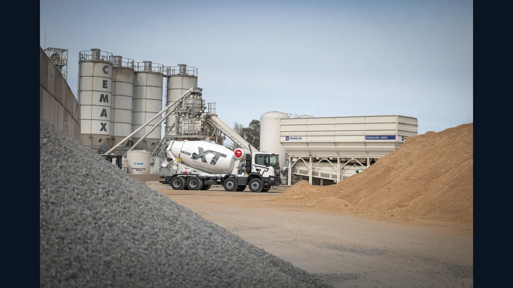

Scania Argentina relanzó su programa de Vehículos Completos para construcción, movimiento de suelos y minería liviana. La propuesta, presentada en septiembre y ampliada en una entrevista publicada el 1 de octubre de 2026, reúne chasis, carrozado y servicios en una unidad preparada para su aplicación.
Cuatro configuraciones para dos trabajos
La oferta inicial comprende dos mixers hormigoneros, P320 B8x4 y P350 B8x4 Super, y dos volcadores XT Super, P350 B8x4 y P460 B8x4. Scania informó que los mixers se combinan con una pera INDUMIX de 10 metros cúbicos. Para los volcadores, menciona desarrollos de BACO, Sthal y RMB.
Es importante distinguir estas versiones. El nombre P350 aparece en ambos grupos, pero el camión terminado depende del equipamiento, la transmisión y la misión para la que fue configurado. El P460 se orienta a tareas más exigentes; la empresa declara cargas útiles de 31 y 35 toneladas para sus dos volcadores, respectivamente.
Qué cambia al comprar el vehículo completo
Una compra de este tipo reúne decisiones que normalmente se tramitan por separado. Chasis, toma de fuerza, carrocería, montaje y entrega se coordinan como un conjunto. El cliente debe verificar el alcance concreto de esa integración en su pedido, especialmente las responsabilidades de servicio sobre el camión y el equipo montado.
Según Scania, el programa contempla financiación de la unidad completa mediante Scania Credit Argentina, conectividad para gestión de flotas y respaldo de su red de servicio. Es una propuesta comercial; las condiciones de financiación, disponibilidad y cobertura deben confirmarse para cada operación.

Carrozado, revisión y entrega
En la entrevista a 16 Válvulas, el responsable de Ingeniería de Ventas explicó que Scania trabaja con cuatro carroceros y revisa las unidades montadas antes de su entrega. También describió un circuito en el que el chasis llega al carrocero y el vehículo completo se entrega después de las comprobaciones correspondientes.
La información es útil para una empresa argentina que evalúa ampliar su flota: el plazo relevante no es solamente la disponibilidad del chasis, sino el tiempo hasta contar con el equipo terminado. Conviene pedir la configuración escrita, una fecha de entrega para esa versión y la documentación del implemento.
Qué mirar antes de elegir un mixer o un volcador
El volumen de la caja o de la pera no alcanza para comparar dos soluciones. El operador necesita describir material transportado, recorrido, frecuencia de carga y condiciones del lugar de trabajo. Una unidad que debe maniobrar en obra urbana enfrenta exigencias distintas de la destinada a una cantera.
La misma conversación debe incluir mantenimiento. El taller necesita saber qué partes pertenecen al vehículo y cuáles al implemento, dónde consultar sus referencias y a quién acudir en caso de una falla que involucre a ambos. Para pedir repuestos, los datos de chasis y del equipo montado son más precisos que el nombre comercial del camión.
Una señal para el mercado local
El relanzamiento apunta a reducir la coordinación que recae sobre quien compra un camión para una tarea especializada. Su resultado dependerá de la calidad del montaje, la entrega y el soporte durante la operación. Esos aspectos merecen tanta atención como la ficha técnica.
Para transportistas y contratistas argentinos, la novedad ofrece una opción concreta de compra integrada. La decisión debe partir del trabajo previsto y de una comparación entre configuraciones completas, con sus responsabilidades y servicios definidos desde el inicio.